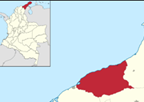
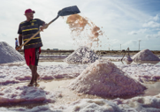
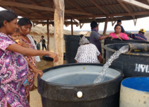
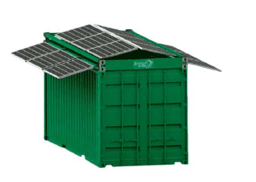
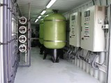

Manaure, La Guajira
Piloto de AQUA-8 en una de las regiones m√°s √°ridas de Colombia
La Guajira: Una Región en Crisis Hídrica
La Guajira es el departamento más árido de Colombia, con precipitaciones anuales inferiores a 300 mm. La península de La Guajira enfrenta una crisis hídrica crónica que afecta a miles de familias Wayuu y comunidades costeras.
- Precipitación anual: Menos de 300 mm (promedio nacional: 2,600 mm)
- Temperatura promedio: 28-32°C durante todo el año
- Vientos alisios: Velocidades superiores a 40 km/h
- Acceso al agua: Limitado, con alto costo de transporte

Manaure: Capital Salinera de Colombia
Manaure es un municipio costero en el norte de La Guajira, conocido por sus salinas artesanales. Su ubicación junto al Mar Caribe lo convierte en el escenario ideal para un sistema de desalinización solar.
- Ubicación: 11°46'N, 72°27'O — Costa norte colombiana
- Población: ~35,000 habitantes
- Altitud: 10 msnm (metros sobre el nivel del mar)
- Distancia al mar: Menos de 500 metros en zonas costeras
- Irradiación solar: ~5.5 kWh/m²/día (excelente para fotovoltaico)

Población Beneficiaria
El piloto de AQUA-8 está diseñado para beneficiar directamente a comunidades de Manaure que actualmente dependen de agua embotellada o transportada a alto costo.
- Familias beneficiadas estimadas: 50-100 familias (200-400 personas)
- Consumo actual: ~2-3 USD/día por familia en agua embotellada
- Calidad actual: Agua con alto contenido de sales y contaminantes
- Componente comunitario: La comunidad participa en operación y mantenimiento

Ventajas del Sitio
Manaure ofrece condiciones naturales excepcionales para un sistema de desalinización solar: acceso directo al mar, alta irradiación solar y terreno plano.
- Salinidad del mar: ~35,000 ppm TDS (Total Dissolved Solids)
- Temperatura del agua: 26-29°C (ideal para membranas)
- Irradiación solar promedio: 5.5 kWh/m²/día
- Horas pico sol: ~5.5 horas/día
- Viento: Constante, √∫til para enfriamiento pasivo

Condiciones del Sitio Piloto
El sitio seleccionado para la instalación del contenedor AQUA-8 cumple con los requisitos técnicos y logísticos para una operación exitosa.
- Terreno: Plano, estable, con acceso vehicular
- Distancia al mar: < 200 m para toma de agua
- Acceso: Vía pavimentada hasta el sitio
- Seguridad: Zona con presencia comunitaria
- Permisos: En coordinación con Corpoguajira
